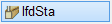
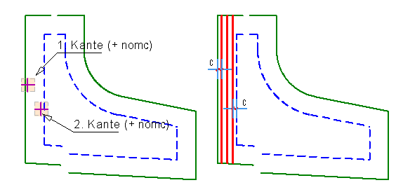
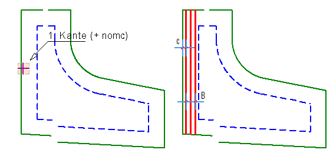
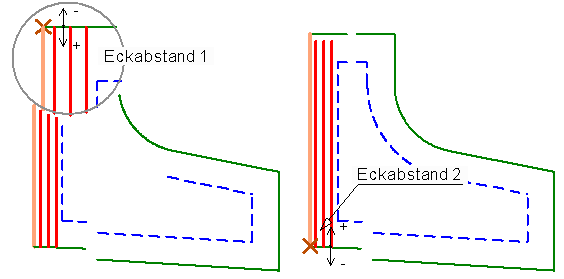

")
")
Ermittlung der Stahlmenge (laufenden Meter) für Staffelverlegungen. Der berechnete Wert wird als Auszugstext (lfdm) bereitgestellt.
|
Achtung: |
|
Einmal ermittelte Stahlmengen werden bei Änderungen, Abstand und Anzahl, an der Staffel nicht automatisch neu berechnet. Führen Sie den Vorgang an geänderten Staffeln erneut durch. |

So wird's gemacht:
[erf.As(cm²)/erf.as(cm²/m)]
Eisen-Abstand bzw. Anzahl der Eisen können automatisch anhand des erforderlichen Stahlquerschnittes (erf.as(cm²/m bzw. erf.As(cm²)) und der gewählten Eisendurchmesser ermittelt werden.
§Wählen Sie die gewünschte Berechnungsart (Schaltflächen unter erf.As(cm²/m)):
|
Berechnet automatisch den Eisen-Abstand für den pro Meter erforderlichen Stahlquerschnitt (erf.as(cm²/m). Das Resultat kann sofort übernommen oder individuell angepasst werden. Der resultierende Stahlquerschnitt wird zum Vergleich angezeigt [vorh.As(cm²)]. Hinweis: Die Angabe des erforderlichen Stahlquerschnittes ist optional. Wird kein Wert oder 0 angegeben, muss der Abstand der Stäbe im Folgenden versuchsweise eingegeben werden, bis der resultierende Stahlquerschnitt [vorh.As(cm²)] den gewünschten Wert hat. |
|
Berechnet automatisch die für den erforderlichen Stahlquerschnitt (erf.As(cm²)) benötigte Mindestanzahl der Eisen. Das Resultat kann sofort übernommen oder individuell angepasst werden. Der resultierende Stahlquerschnitt wird zum Vergleich angezeigt [vorh.As(cm²)]. Hinweis: Die Angabe von erf.As(cm²) ist optional. Wird kein Wert oder 0 angegeben, muss die Anzahl der Stäbe im Folgenden versuchsweise eingegeben werden, bis der resultierende Stahlquerschnitt [vorh.As(cm²)] den gewünschten Wert hat. An der Positionierung wird auch der nominelle Abstand angeschrieben. |
|
Übernahme des Durchmessers, Abstands bzw. der Anzahl aus einer vorhandenen Verlegung. [So wie welche Verlegung?]. Klicken Sie die Verlegung an, deren Werte Sie übernehmen möchten. Je nach Berechnungsart wird Abstand oder Anzahl aktiviert. Die Abfrage wechselt zu [KOR?] (s. weiter unten). Hinweis: Eine Verlegung in Form von z. B. "0 ⌀ 12" kann nicht angeklickt werden. Die Verlegung muss eine Verlegeanzahl enthalten. |


§Geben Sie den erforderlichen Stahlquerschnitt ein und bestätigen Sie die Angabe [erf.As(cm²/m) bzw. erf.As(cm²)].
§Wählen Sie in der Liste unter ø per Mausklick den Eisendurchmesser.
Wenn der erforderliche Stahlquerschnitt eingegeben wurde, berechnet ISBCAD automatisch den bestmöglichen Wert für den Abstand bzw. die Eisenzahl und schlägt diesen unter Abstand(>0) bzw. Anzahl(>=1)) vor. Der resultierende Stahlquerschnitt wird unter vorh.As(cm²/m) angezeigt.
§Wenn der resultierende Stahlquerschnitt vorh.As(cm²/m) größer/gleich dem erforderlichen Stahlquerschnitt erf.As(cm²/m) ist, können Sie den Wert für Abstand(>0) bzw. Anzahl(>=1) bestätigen.
Alternativ können Sie einen anderen Wert angeben (und bestätigen) und den resultierenden Stahlquerschnitt vorh.As(cm²/m) prüfen.
§Prüfen Sie, ob das Resultat Ihren Anforderungen entspricht.
Wollen Sie die Angaben ändern [KOR]?
|
Korrigieren Sie Ihre Angaben beginnend mit erf.As(cm²/m) (erforderlicher Stahlquerschnitt) oder verwenden Sie |
|
Der resultierende Stahlquerschnitt wird beibehalten. |

 (→ Untere Menüleiste).
(→ Untere Menüleiste).
[1. Kante]
Für die Übernahme der voreingestellten Betondeckung [nom c] klicken Sie zunächst die Bezugslinie auf der Linienseite an, auf der die Betondeckung berücksichtigt werden soll, und bestätigen anschließend mit Rechtsklick. Für einen individuellen Abstand klicken Sie zunächst die Bezugslinie auf der Linienseite an, auf der die Betondeckung berücksichtigt werden soll, und geben den Wert mit dem entsprechenden Vorzeichen ein. Bestätigen Sie mit der Eingabetaste. Wenn kein Abstand angegeben werden soll, geben Sie als Differenz 0 (Null) ein.
§Klicken Sie die erste Begrenzungslinie oder den ersten Begrenzungskreis an. Hieraus ergibt sich die Lage und die vorläufige Länge.
 |
[2. Kante]
Die Anmerkungen zu [1. Kante] gelten auch für die aktuelle Abfrage. Die Staffel wird auf der angeklickten Linienseite verlegt.
§Klicken Sie die zweite Begrenzungslinie an oder geben Sie die absolute Breite der Staffel an. Hieraus ergibt sich die Verlegebreite.
 |
Die Bezugslinie ist markiert und die aktuelle Ecke durch ein Kreuz gekennzeichnet.
[Eckabstand 1; Eckabstand 2]
§Geben Sie einen Wert an, um den die Stabenden von der Kante abgesetzt werden sollen. Der vorgeschlagene Wert ist die Grund‑Betonüberdeckung. Bestätigen Sie die Angabe mit der Eingabetaste oder Rechtsklick.
Positive Werte weisen nach „innen“, negative nach „außen“. Positive Werte werden beim Anklicken immer in Richtung des Cursors berücksichtigt.
Alternativ: Klicken Sie eine Linie als Begrenzung an und fügen Sie die Betondeckung mit Rechtsklick hinzu.
 |
[Auswahl]
Optionen:
Die Abfrage beginnt wieder bei 1.Kante. Die folgende Staffel behält den Durchmesser, Abstand und die Anzahl. |
|||||||||||||||
Die Abfrage beginnt wieder bei erf.As/erf.as. |
|||||||||||||||
Öffnet den Dialog Durchmesser und Längen für LFDM [m]. |
|||||||||||||||
|
|||||||||||||||


[Position]
Wählen Sie aus den Vorschlägen die gewünschte Nummer aus, oder geben eine beliebige freie Startnummer ein. Wenn in der Verlegung mehrere Durchmesser vorkommen, werden diese mit den Folgenummern positioniert.
[Drehwinkel]
Geben Sie den Winkel an, in dem der Auszug auf der Zeichnung abgelegt werden soll.
[Lage Auszug]
Setzen Sie den Auszug mit den Auszugstexten per Mausklick an der gewünschten Stelle ab.
[Lage Text]
Schieben Sie den/die Text/e nacheinander an die gewünschte Stelle und schließen mit der linken Maustaste ab oder übernehmen Sie die vorgeschlagene Lage per Rechtsklick.